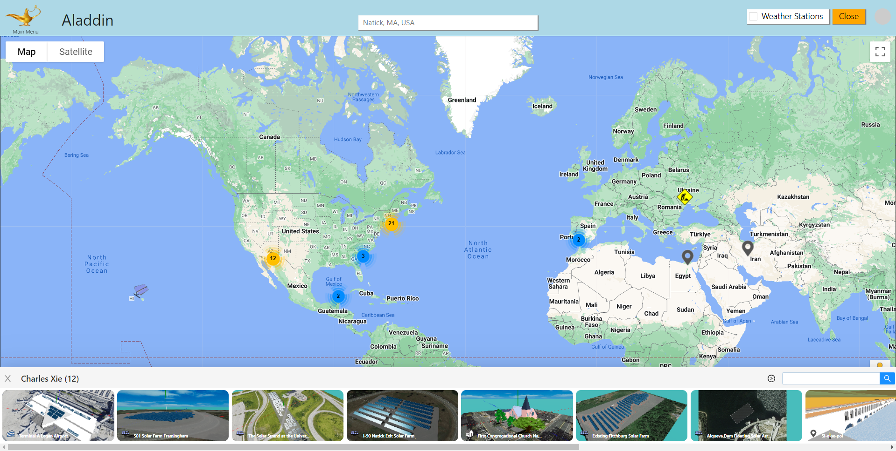
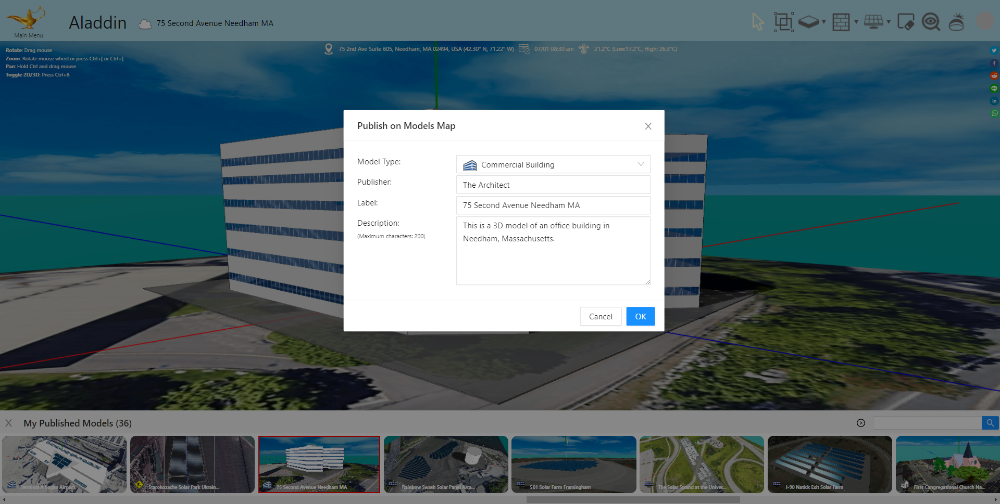
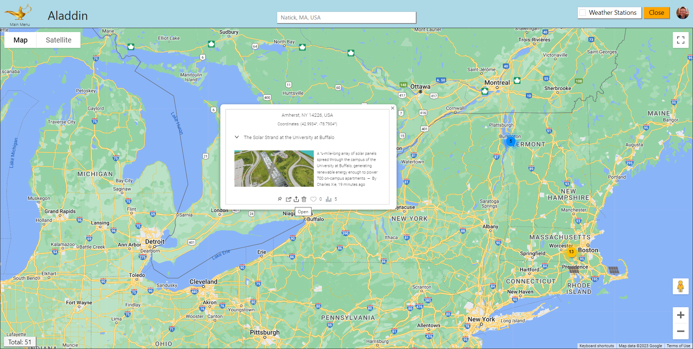
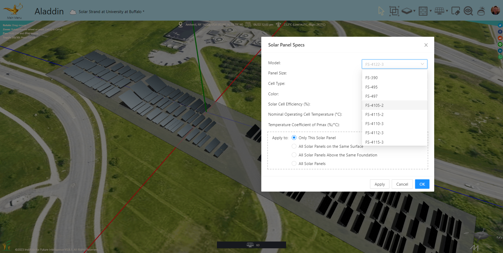
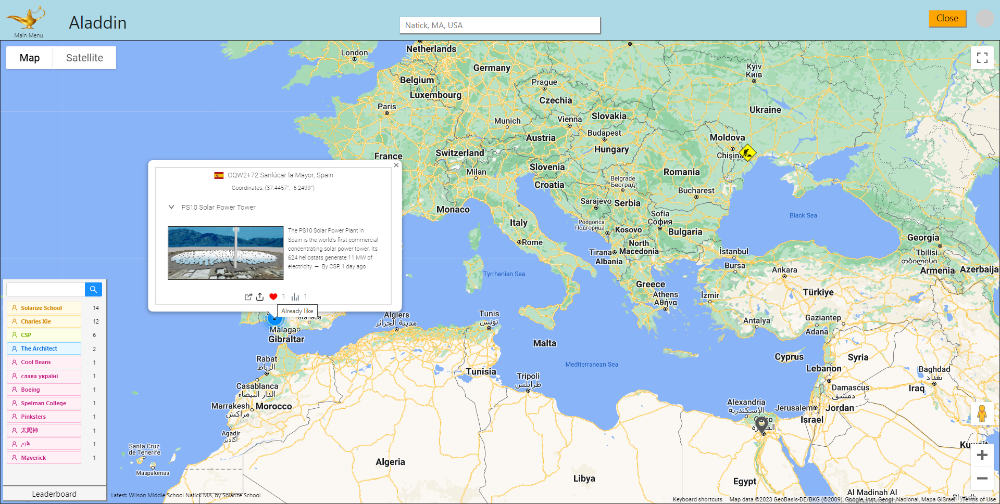
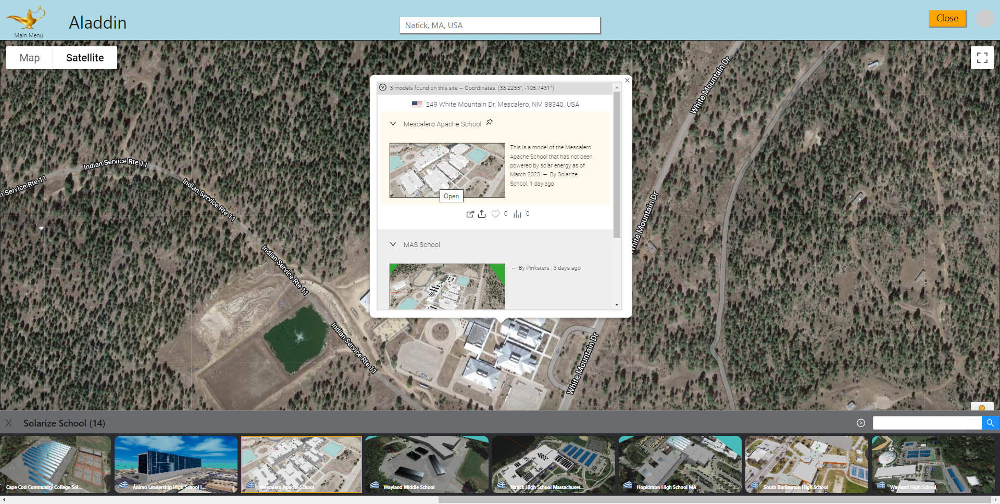

A Citizen Science Platform for Renewable Energy Research and Education
By Charles Xie ✉
Listen to a podcast about this article
The United States plans to add 950 million solar panels, 120,000 wind turbines, and 2,300 grid-scale battery plants by 2030 to power homes, businesses, and communities. A barrier to this goal is the so-called Nimby, the acronym of “not in my back yard,” that represents a phenomenon of opposition by residents to proposed developments in their neighborhoods. As renewable energy is exploited more widely in our society after more than two decades of solar and wind booms, social conflicts driven by Nimbyism around what was once deemed a panacea for energy crises start to surge. Renewable energy generation often confronts other basic needs such as food, water, and culture, as its distributed nature demands a lot of space. As such, the transition of our society to renewable energy will need the participation of all of its citizens through transparent and democratic processes. Simply dismissing opposition to renewable energy as Nimbyism is not constructive. Energy researchers and social scientists have advocated for greater public participation in the planning and decision making of renewable energy development, sometimes referred to as energy democracy and energy citizenship, to increase public trust and community support.
To address this challenge, we are developing Aladdin as a free citizen science and crowdsourcing platform to support public participation in renewable energy engineering and planning. The software allows any registered user to independently design their own renewable energy solutions for their own communities in a Web browser, share the proposed solutions via social networks for any stakeholders to view and play with, and even draw public interest in crowdfunding their eventual construction. In this article, I will show some social media features in Aladdin that have been built to support citizen science for renewable energy.
Building a map of models as a citizen science forum
Maps are an ideal platform for implementing citizen science that depends on geolocations. They provide a public forum for local residents and stakeholders to propose and share their ideas about renewable energy projects that may impact their neighborhoods and communities. Unlike other types of social networks in which participants present ideas in text, images, or videos, Aladdin allows users to turn ideas into visual and interactive 3D CAD models that can be found on the map by anyone concerned about their communities, displayed on top of satellite images to visualize how the ideas may affect the local environments and landscapes, and analyzed with powerful numerical simulations to evaluate their costs and benefits.

The Models Map is a repository of user-created, geolocated models for anywhere in the world
Click HERE to view the Models Map
Whether it is a small rooftop solar project, a large utility-scale solar farm, or a commericial building, Aladdin users can create a design solution with the CAD tools built in Aladdin, save it on the cloud, and then publish it to the Models Map embedded in Aladdin. Users can also use an alias or nickname as a publisher name (if they choose not to publish using their real names due to privacy concerns), add a short label (no more than 50 characters), and provide a brief description (no more than 200 characters) to be published with the model (as shown in the following image). A screenshot of the model will be automatically generated and uploaded for displaying as a thumbnail image on the Models Map to give viewers a glimpse of the model.

Publish a 3D model on the Models Map
A model must be saved on the cloud (users need to create an account with Aladdin and sign in to be able to do so) before it can be published on the map. A published model points to the file stored on the cloud. Once the cloud file is updated, viewers will get the new version when they open it from the map. To update the information about a published model displayed on the map, the user only needs to make the changes and republish it.
Switching between the map mode and the design mode
Once a model is published, it can be found on the Models Map or the Models Gallery, both of which can be opened from the Main Menu. On the map, the model is represented by a marker anchored at the corresponding location. Its information is displayed when a viewer moves the mouse over the marker. A viewer can click on the Open button to return to the design mode and load the model for viewing and editing. For students, this switch between the map mode and the design mode provides a mechanism to situate learning in a social context as they can easily exchange their design solutions and learn from one another. (At this point, however, users cannot work on the same model at the same time, through they can create their own variations from shared models.)


Switching between the map mode and the design mode of Aladdin
Adding social media features
Similar to other social media, Aladdin users can view, share, and like a model on the map, as shown in the following screenshot. There is also a leaderboard that shows the top 20 users who have published the most. The search box on the leaderboard also allows users to search for other users by their publishing names. Users can find a list of their own published models in the Models Gallery and a list of the models that they like from their account pages. The latter can be regarded as a way to "bookmark" models. We will implement user comments and other features in the future as well.

Basic social media features on the Models Map
Supporting multiple models on the same site
At the stage of planning a renewable energy project, we must address concerns and interests from different groups in the community. This means that we need to see different ideas and alternative designs about the same site so that we can choose an optimal solution. For example, when designing solar energy solutions for a school, students can be challenged to not only meet the energy needs of the school but also win the majority approval of their schoolmates (e.g., a solution that is too visually intrusive to the existing landscape may be voted down, regardless of its outputs). Being able to accommodate multiple designs for the same site on the map for others to review and critique is essential. As shown in the following image, Aladdin allows multiple models to be displayed on the same site with basic information for viewers to browse.

Multiple models on the same site allow users to see different ideas from others
Models on a site can be sorted by the order they were published or updated. Administrators can also pin certain models so that they stay at the top of the list. In the scenario shown in the above image, a teaching assistant pinned the Aladdin model of Mescalero Apache School in New Mexico, which currently has not installed any solar panels on the roofs or above the parking lots, as the starting point for their students to add solar panels. Students then posted different design solutions, which are listed under the pinned one.